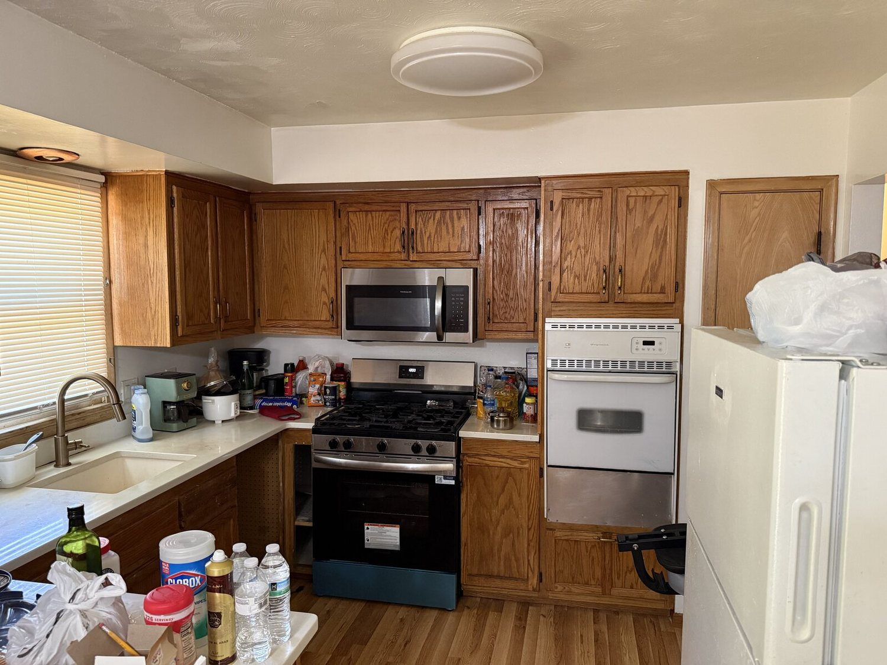
Home Cleaning
General cleaning of kitchens, living areas, floors, bathrooms, and other agreed-upon spaces.
Community care in action
Free home cleaning and outdoor property care for older adults, veterans, people with disabilities, and neighbors facing financial hardship.
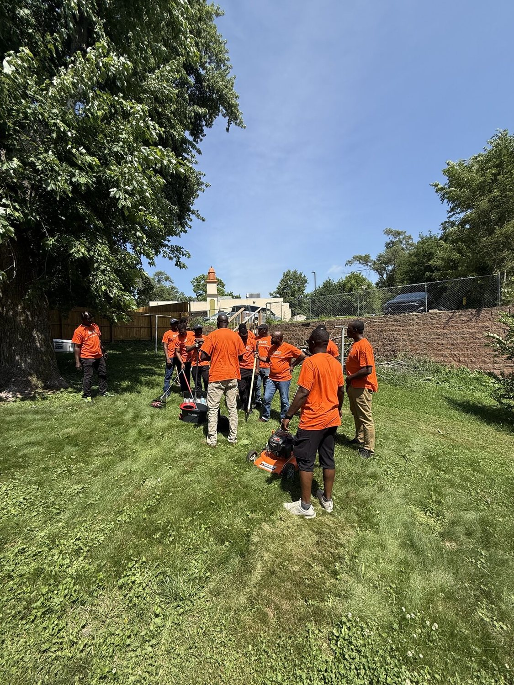
Dignity starts at home.
We make essential upkeep more accessible.
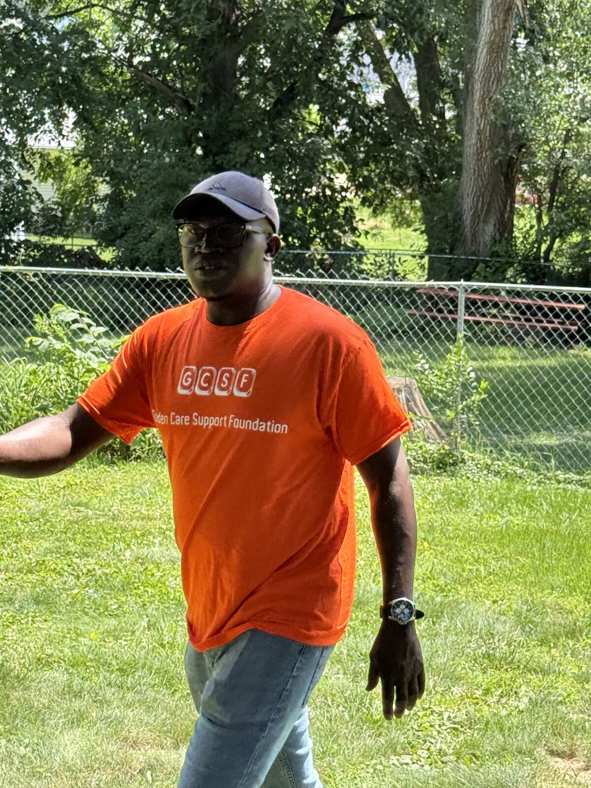
About our mission
Every home tells a story. When age, disability, military service, or financial hardship makes routine upkeep difficult, a caring community can make all the difference.
Golden Care Support Foundation brings volunteers together to complete meaningful cleaning and yard projects at no cost to the people receiving help.
A cleaner, safer home can restore confidence and help people remain connected to the place they know best.
What we do
Projects are matched to volunteer availability, location, safety, and scope. Every request is reviewed with care.

General cleaning of kitchens, living areas, floors, bathrooms, and other agreed-upon spaces.
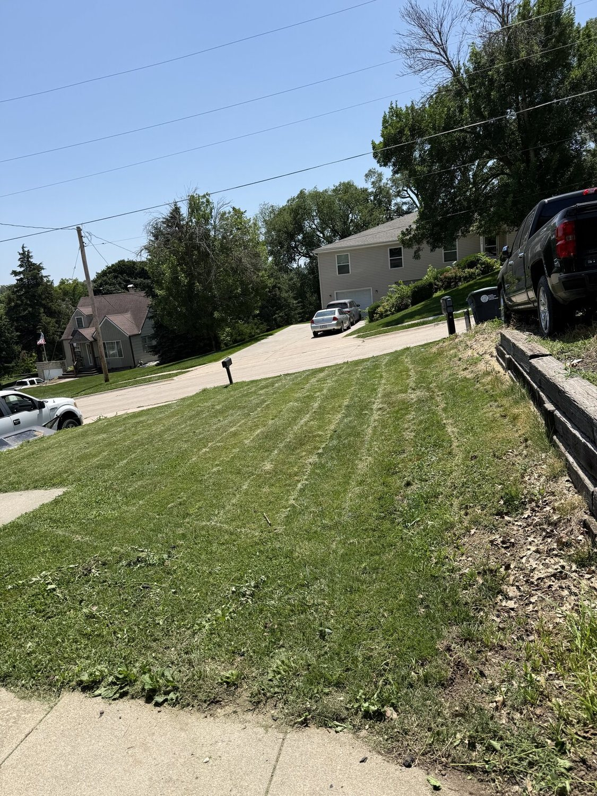
Mowing, trimming, edging, light debris removal, and seasonal yard cleanup.
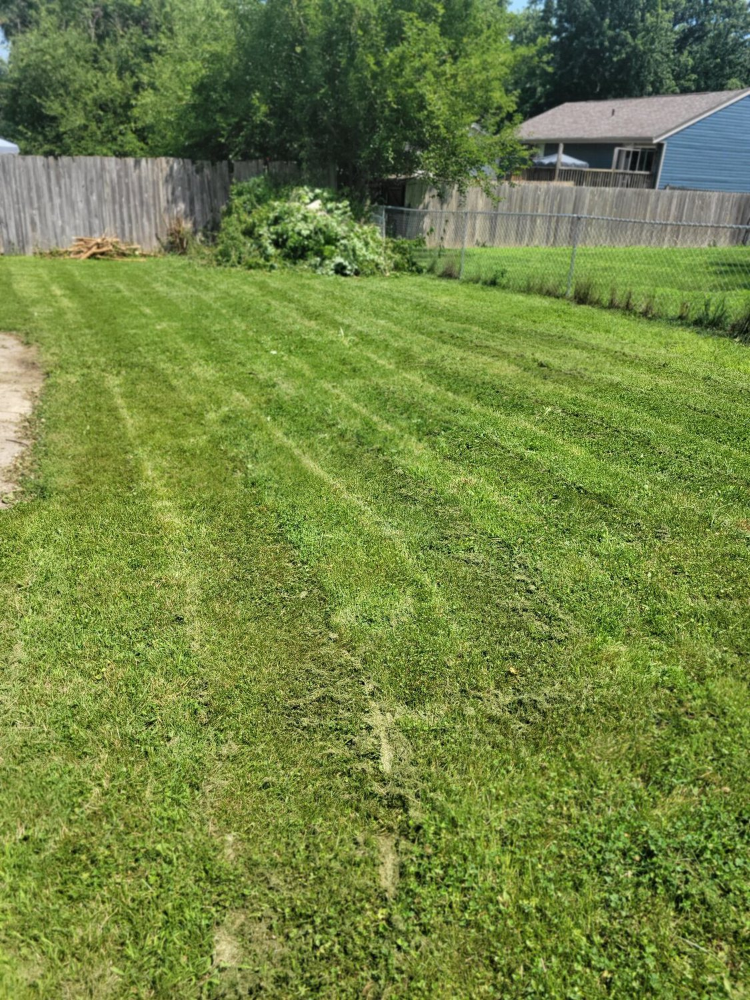
Light pruning, weed removal, overgrowth clearing, and making outdoor spaces easier to use.
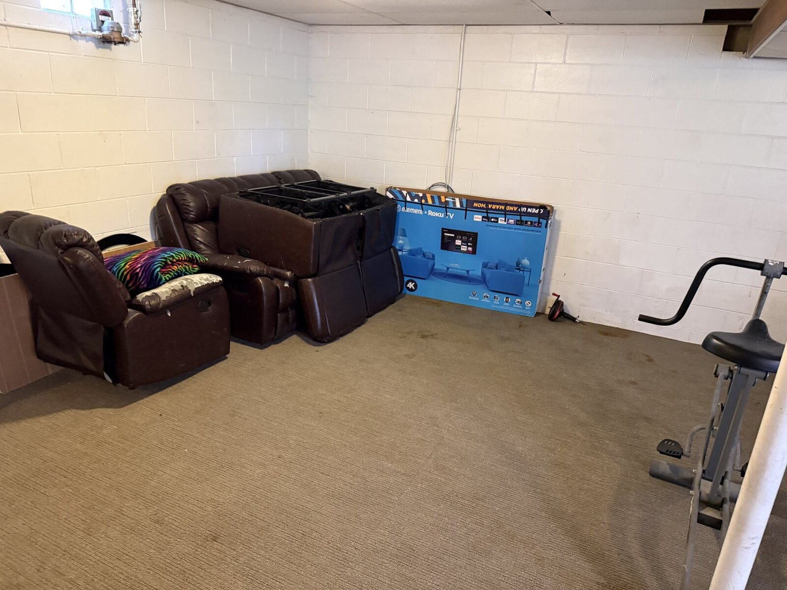
Sorting, bagging, organizing, and removing manageable household items by agreement.
Real work. Visible impact.
These photos were selected from Golden Care's recent volunteer projects.
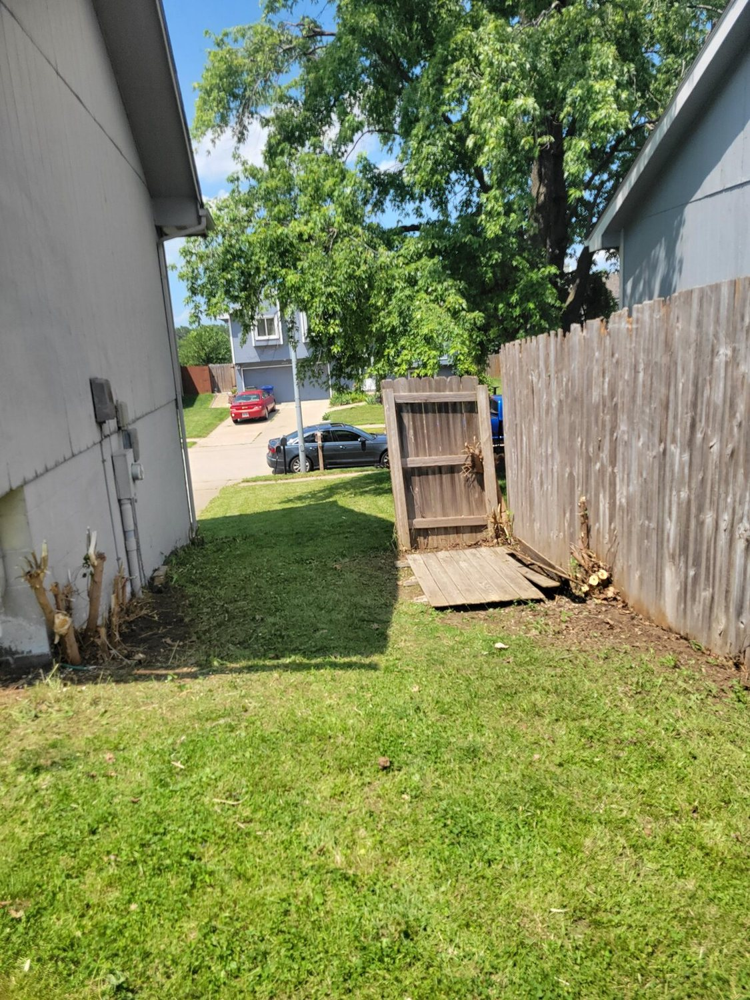
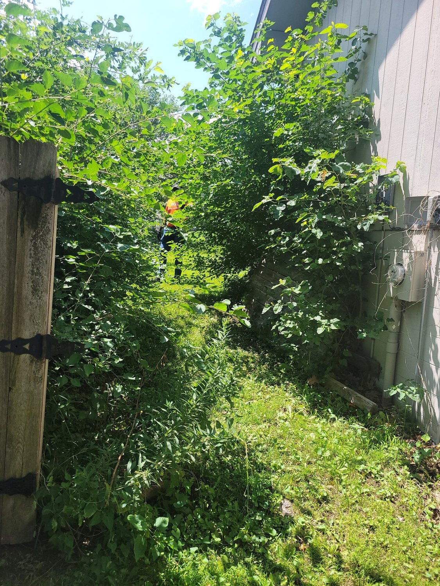
BeforeAfterOvergrowth was cleared to reopen a safe, usable path through the yard.
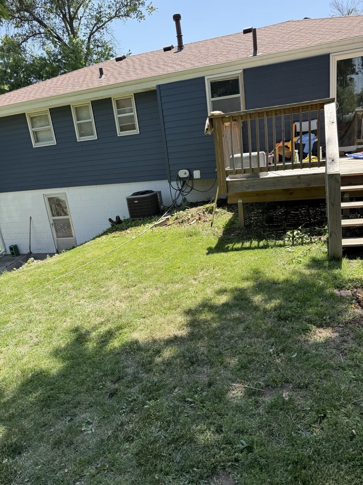
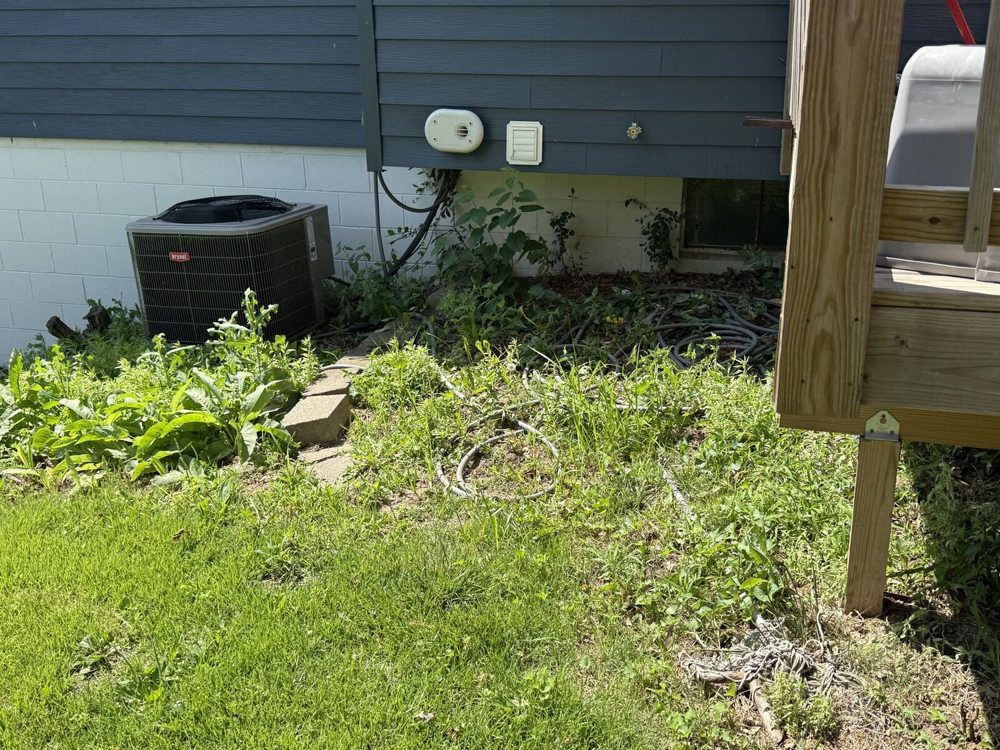
BeforeAfterVolunteers cut back weeds and vegetation around the home and deck.
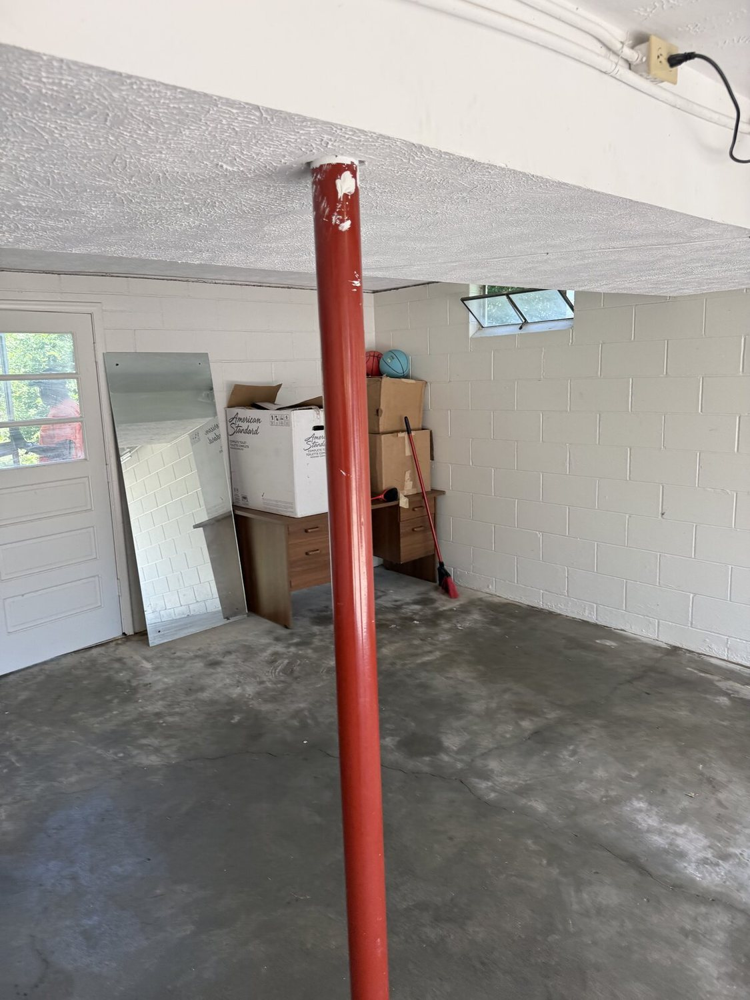
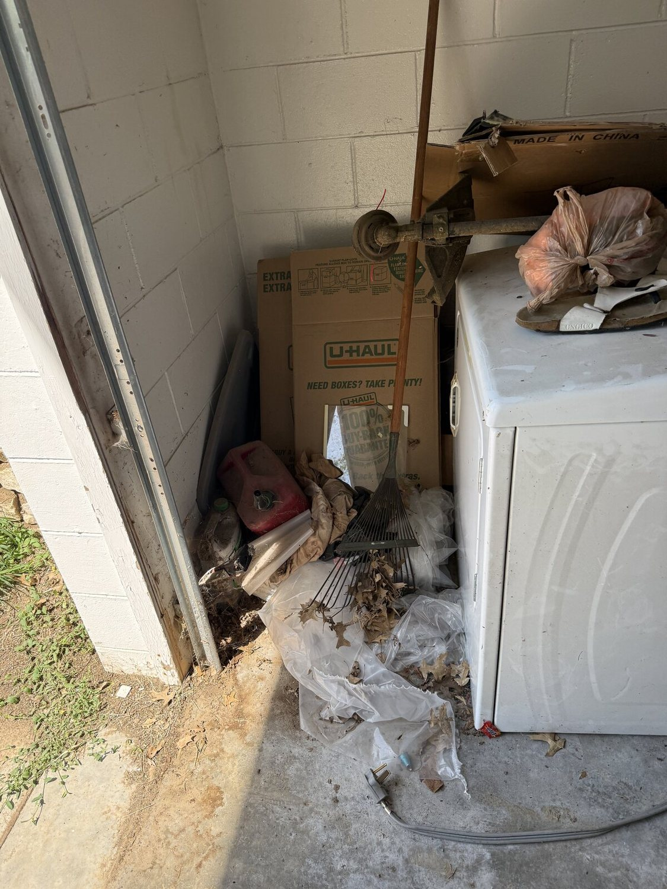
BeforeAfterA cluttered service area was cleared and cleaned for better access.
How support works
We review each request, confirm the project is safe and within scope, then coordinate a volunteer service day.
Service is not guaranteed and depends on eligibility, project scope, location, volunteer capacity, and weather.
Share the basic project details and the best way to contact you.
Our team confirms eligibility, safety, location, and volunteer availability.
We agree on the work, timing, access, and any preparation needed.
The team completes the approved project with care and respect.
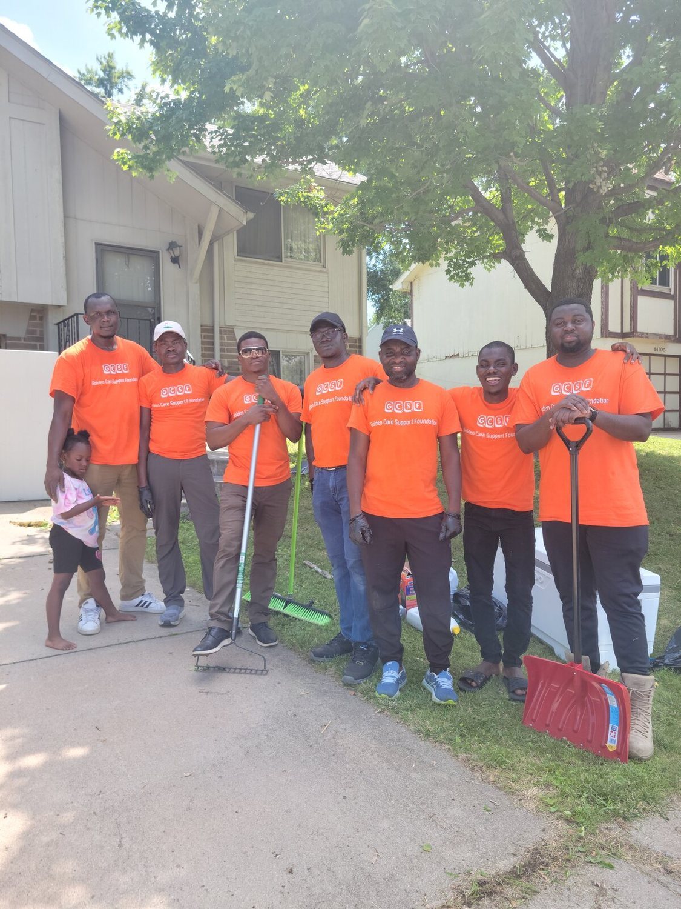
Be part of the care
Let's connect
Use this form to prepare an email to the Golden Care team. js/site-config.js.
Stronger homes. Stronger community.